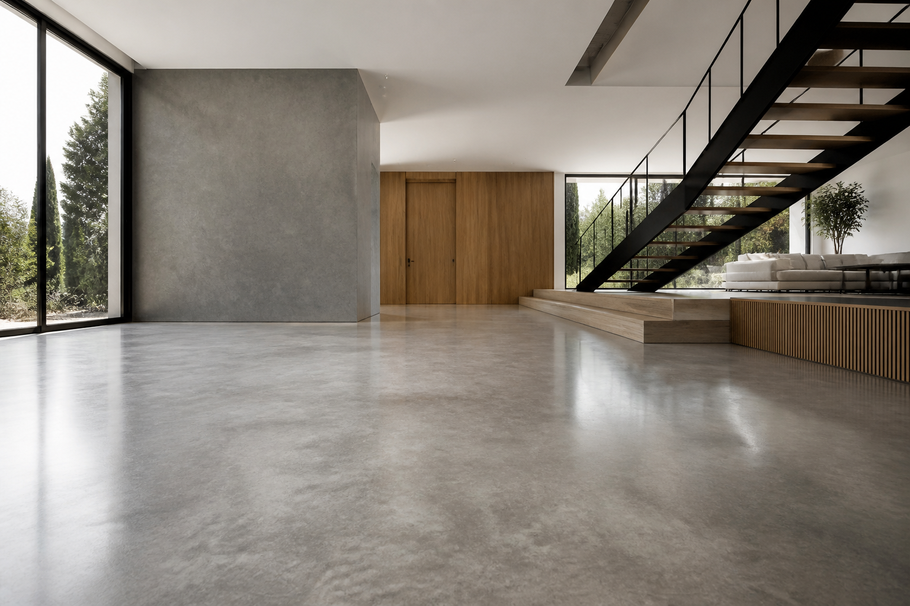
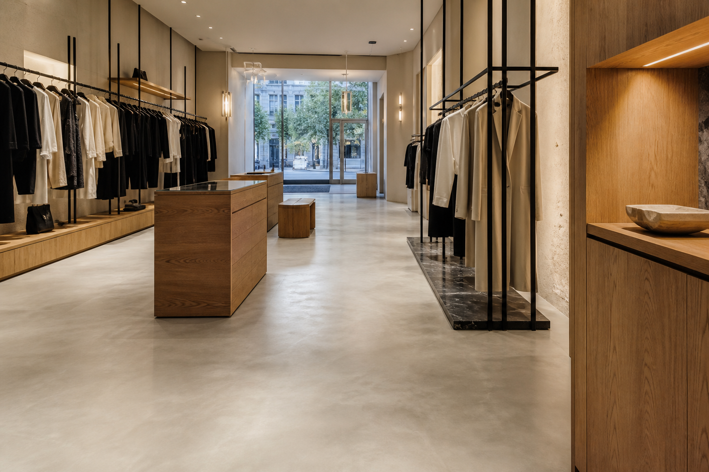

Pavimentos continuos
Superficies sin juntas, resistentes y fáciles de mantener para espacios contemporáneos.

Diseñamos e instalamos suelos continuos y técnicos para viviendas, comercios e industria en Madrid y alrededores.
Estudiamos el soporte, el uso y la estética para recomendar el sistema que realmente necesita cada proyecto.
Superficies sin juntas, resistentes y fáciles de mantener para espacios contemporáneos.
Acabado artesanal de mínimo espesor para interiores, baños, cocinas y locales.
Sistemas de altas prestaciones para garajes, talleres, comercios y zonas industriales.
Durabilidad y carácter mineral para grandes superficies residenciales e industriales.
Soluciones antideslizantes, sanitarias y resistentes a cargas, abrasión y químicos.
Diagnóstico, preparación y renovación para recuperar seguridad y rendimiento.
Una muestra visual de los tipos de proyecto que abordamos.


Imágenes conceptuales de referencia para esta primera versión.
Controlamos cada fase para conseguir un acabado limpio, resistente y ajustado a los plazos.
Revisamos el soporte y entendemos el uso, el acabado y los condicionantes de la obra.
Definimos sistema, preparación, muestras, alcance y presupuesto detallado.
Protegemos el entorno, preparamos la base y aplicamos cada capa con control técnico.
Revisamos el resultado y explicamos el mantenimiento adecuado de la superficie.
Nos desplazamos por toda la Comunidad de Madrid y provincias cercanas.
Consultar disponibilidad →Onic Pavimentos nace para unir criterio estético, conocimiento técnico y una ejecución cuidada.
Trabajamos con particulares, estudios de arquitectura, interioristas, constructoras y responsables de mantenimiento. Cada proyecto comienza con un diagnóstico honesto y termina con una superficie pensada para su uso real.
“Buscábamos un acabado sobrio, resistente y fácil de mantener. El resultado transformó por completo el espacio.”
Testimonio de muestra · Sustituir por una reseña verificada
Envíanos unas medidas aproximadas, el tipo de espacio y su ubicación. Te responderemos para valorar la mejor solución.